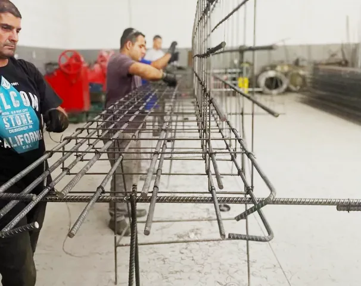
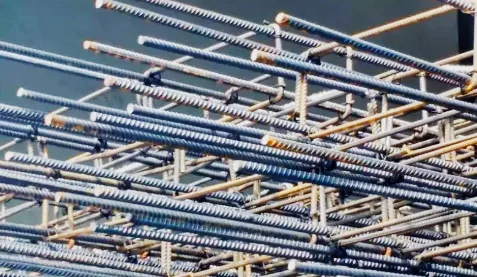
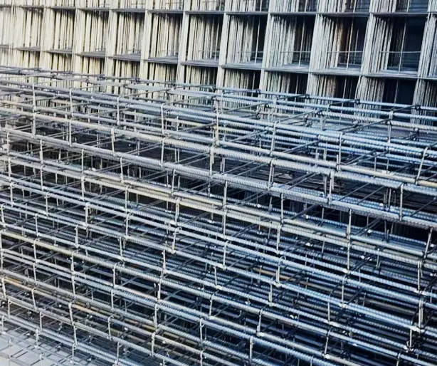
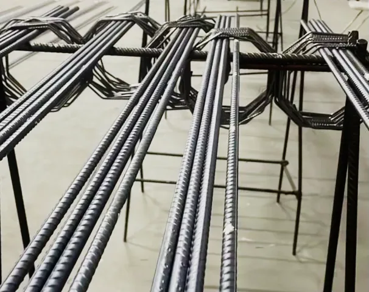
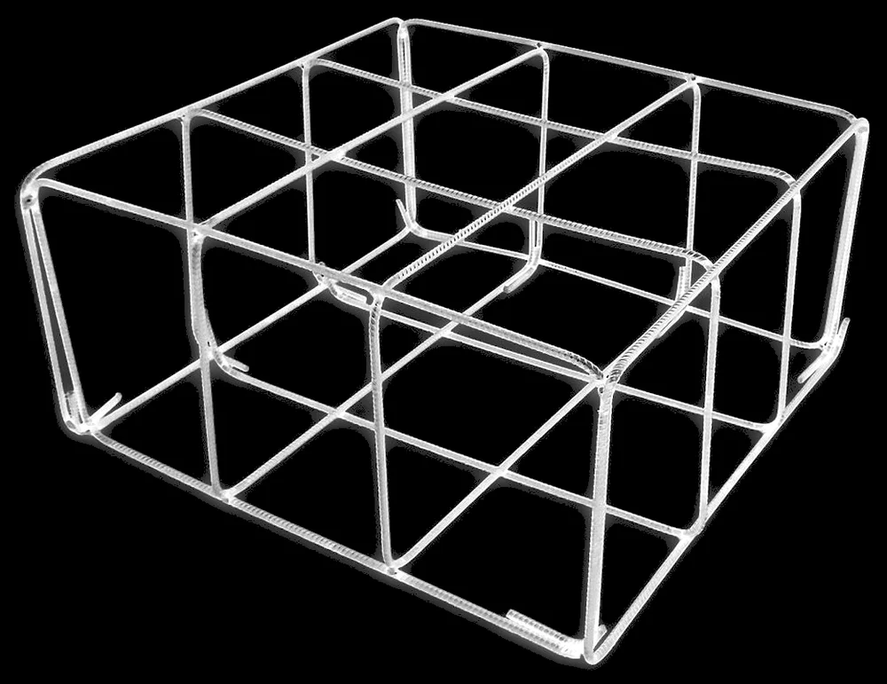
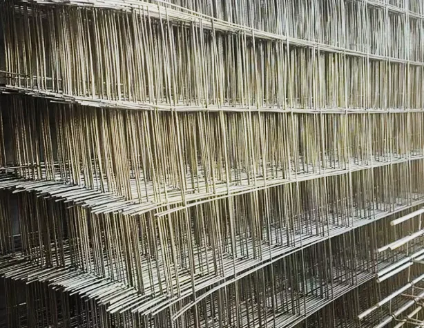
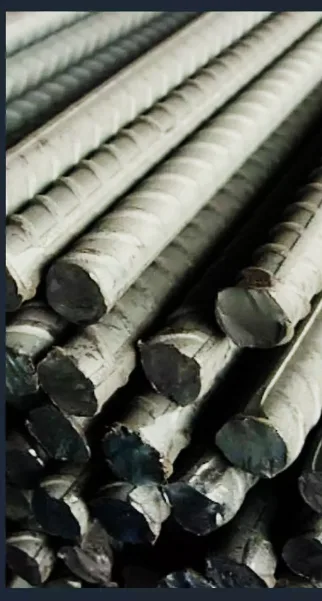
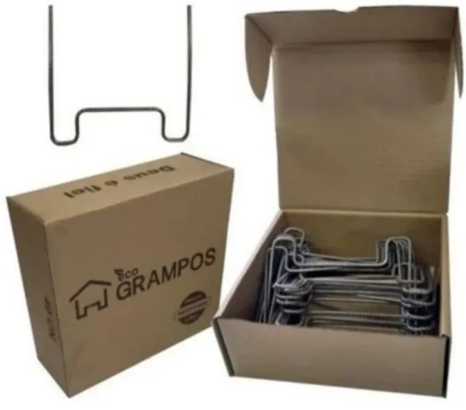

Vigas armadas
Barras longitudinais e estribos montados conforme o projeto, prontos para ir direto para a forma.
Orçar vigasCorte e dobra de aço em Caçapava, SP
Armações, estribos, telas soldadas e barras de aço cortados e dobrados conforme o seu projeto. Você manda a lista de ferros, a Fumiya entrega pronto para montar.


“O ferro chega pronto. O pedreiro só monta.”
Por muito tempo o ferro foi cortado e dobrado no próprio canteiro: barra de 12 metros, serra, bancada e o armador parado dobrando estribo. Sobrava ponta de ferro, faltava espaço e a obra andava mais devagar.
Na Fumiya esse trabalho sai da obra. Cada peça é cortada e dobrada conforme o projeto e vai para o canteiro pronta para amarrar e concretar, seja uma sapata de reforma ou a estrutura de um prédio.
Barras e estribos no diâmetro e no comprimento que o projeto pede.
Você paga pelo ferro que vai usar, não pela ponta que fica no chão.
Atendimento direto, com quem entende de armação, pelo WhatsApp ou telefone.
Tudo em aço para estrutura de concreto, da sapata à laje. Se não encontrou o que precisa, pergunte: a gente faz sob medida.

Barras longitudinais e estribos montados conforme o projeto, prontos para ir direto para a forma.
Orçar vigas
Colunas com estribos no espaçamento certo, na bitola e no tamanho do projeto.
Orçar pilares
Armações em gaiola para sapatas, blocos e baldrames, na medida da fundação.
Orçar gaiolas
Painéis para lajes, pisos, radier e contrapisos, com malha uniforme.
Ver tipos de tela
Vergalhões em várias bitolas, inteiros ou cortados. Consulte preço e disponibilidade do dia.
Calcular peso
Estudos sobre o corte e dobra industrializado apontam o mesmo caminho: menos perda de aço, menos etapas na obra e um canteiro mais seguro.
Escolha a bitola, o comprimento de cada peça e quantas peças você precisa. A conta usa a massa nominal da NBR 7480 e mostra quanto sobraria se você cortasse barras de 12 m na obra.
0kg de aço
Estimativa para orçamento, sem traspasse nem ganchos. A quantidade final é a do projeto estrutural.
Valores nominais de referência para conferir o projeto e o orçamento. Quem define a bitola é sempre o engenheiro responsável pela estrutura.
| Bitola | Pol. | Aço | kg/m | Barra 12 m | Uso comum |
|---|
| Tela | Malha | Fio | kg/m² | Uso comum |
|---|---|---|---|---|
| Q-92 | 15 × 15 cm | 4,2 mm | 1,48 | Calçadas, pisos e contrapisos |
| Q-113 | 10 × 10 cm | 3,8 mm | 1,80 | Pisos e lajes leves |
| Q-138 | 10 × 10 cm | 4,2 mm | 2,20 | Lajes e pisos com tráfego de carro |
| Q-196 | 10 × 10 cm | 5,0 mm | 3,11 | Radier e pisos com mais carga |
Telas em painel de 2,45 × 6,00 m, em aço CA-60, conforme a NBR 7481. Também há telas leves em painel de 2 × 3 m para contrapiso. Consulte o que temos em estoque.
Quatro passos, quase tudo pelo celular.
Foto, PDF ou a lista de ferros escrita à mão. Se tiver dúvida na quantidade, a gente ajuda a conferir.
Valores e prazo combinados pelo WhatsApp, de forma clara e sem enrolação.
Cada peça é cortada e dobrada na medida do projeto, na bitola que você pediu.
Retire na loja ou combine a entrega. O ferro chega pronto, sem cortar nada no canteiro.
Ajuda bastante. Com o projeto estrutural ou a lista de ferros, o orçamento sai mais rápido e mais preciso. Sem ele, conte o que vai construir e a gente indica o melhor caminho.
São categorias de aço da NBR 7480. O CA-50 tem resistência mínima de 500 MPa e é usado nas barras principais de vigas, pilares e sapatas. O CA-60, com 600 MPa, vem em fios mais finos e aparece em estribos e telas soldadas. O projeto diz qual usar em cada peça.
Do jeito que for mais fácil: foto da planta, PDF do projeto ou a lista escrita à mão. Você também pode montar a lista aqui no site, pela calculadora, e enviar tudo de uma vez pelo WhatsApp.
Sim. Cada pedido é sob medida, na bitola, no comprimento e no formato que você informar.
Também. Consulte o preço e a disponibilidade das barras do dia.
Combine a entrega pelo WhatsApp informando o endereço da obra. Se preferir, retire na loja com o pedido já separado.
Pelo WhatsApp (18) 99712-7070 ou pelo telefone (12) 3221-6154.
Conte o que você precisa e a resposta vem pelo WhatsApp.
WhatsApp(18) 99712-7070 Telefone(12) 3221-6154 Instagram@fumiya.cacapavaCidadeCaçapava, SP
A lista está vazia. Use a calculadora para adicionar peças.
Peso estimado 0 kg
Seu nome e endereço só servem para montar a mensagem, que segue pelo seu WhatsApp. .
Elaborada conforme a Lei Geral de Proteção de Dados (Lei nº 13.709/2018).
Este site é da Fumiya Ferro e Aço Armado, em Caçapava, SP. Para qualquer assunto de privacidade, fale com a gente pelo WhatsApp (18) 99712-7070.
O site não tem cadastro nem banco de dados. O nome, o endereço da obra e os itens que você escreve no formulário ou na lista de ferros viram uma mensagem enviada pelo seu próprio WhatsApp, e o atendimento continua por lá.
Não usamos cookies de publicidade nem de estatística. A lista de ferros fica guardada só no seu aparelho (chave fumiya-lista do armazenamento local), para você não perder o que montou. Ela some quando você esvazia a lista ou limpa os dados do navegador.
O WhatsApp (Meta) é o canal de atendimento. As fontes do site são carregadas do Google Fonts, que recebe o seu IP ao entregá-las. O Instagram é apenas um link. A hospedagem do site pode registrar dados técnicos de acesso, como IP e data.
Você pode pedir a qualquer momento acesso, correção ou exclusão dos seus dados, conforme o art. 18 da LGPD, pelo WhatsApp acima. Também pode procurar a Autoridade Nacional de Proteção de Dados (ANPD).